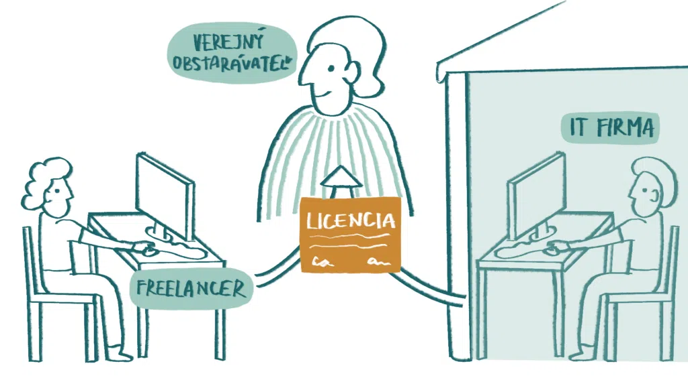
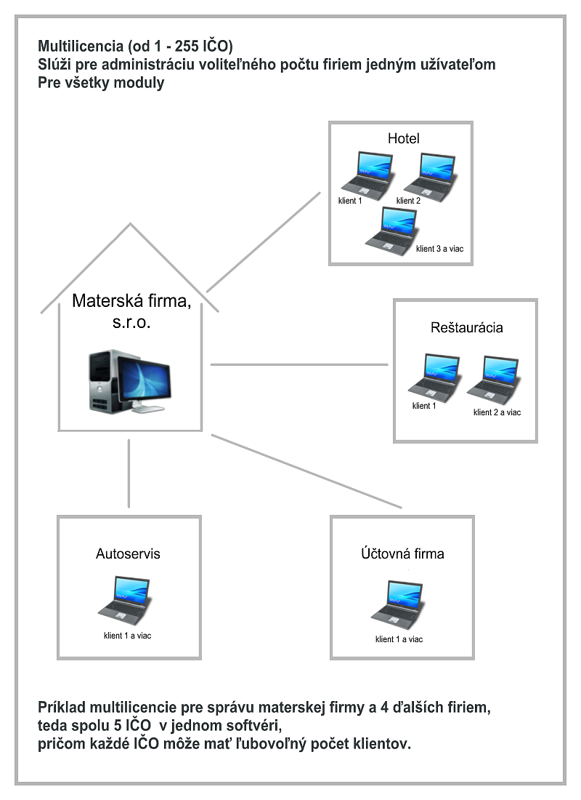

Autorské práva na softvér
Keďže pri práci s IKT pracujeme neustále s nejakým softwarom, tak bolo potrebné definovať pravidlá používania softwaru.
To upravuje práve autorský zákon.
Počítačový program z hľadiska práva sa chápe ako umelecké autorské dielo a preto je chránený práve autorským zákonom.
Je nelegálne ich používať a šíriť bez súhlasu vlastníka autorských práv.
Výrobcovia si zvyčajne pomáhajú licenčnou zmluvou, v ktorej určujú podmienky používania programu.
Polícia na Slovensku zatiaľ kontroluje legálny softvér hlavne vo veľkých firmách. Domácnosti zatiaľ nikto nekontroluje.
O autorských právach na softvér viac TU

Registrácia softvéru
Registrácia je nutná, ak chceme legálne zakúpenú kópiu softvéru plnohodnotne využívať, ak si chceme plne sprístupniť funkcie daného softvéru.
Ide o prihlásenie daného softvéru u jeho výrobcu. Niektorí výrobcovia si povinnou registráciou chránia svoje dielo.
Registráciou získavame právo na pomoc priamo od výrobcu pri riešení technických problémov. Získavame nárok na aktualizácie a doplnky do softvéru zadarmo.
Registrácia môže byť cez internet (najbezpečnejšia a najpoužívanejšia) alebo cez telefón (tento spôsob je často zneužívaný na registráciu nelegálnych kópii).
Firmy používajú registráciu aj ako štatistiku, aby vedeli ako je ich program úspešný. Treba mať na pamäti, že čím viac sa vás snaží softvér prinútiť registrovať sa a zadať citlivé informácie, tým je pravdepodobnejšie, že informácie budú zneužité.
O registracii softvéru viac TU
Licencia
Znamená právo používať program. Licencia vyplýva z licenčnej dohody medzi autorom programu a používateľom. Ak si kúpime napríklad počítačový program, jeho súčasťou je aj licenčná zmluva.
Stanovuje podmienky, za akých ten program môžeme používať. Ak tieto podmienky dodržiavame, máme legálny softvér.
Licenčná zmluva sa v našich podmienkach podobá kúpno-predajnej zmluve, ktorá určuje práva a povinnosti predávajúceho aj kupujúceho.
Nemožno ju bez súhlasu autora ďalej šíriť, predať alebo prenajať. Zvyčajne stanovuje, že zakúpený program nemôžeme používať na viacerých počítačoch súčasne.
Ak chceme jeden program používať napríklad v počítačovej učebni, kde je viacero počítačov, alebo vo viacerých kanceláriách firmy, musíme si zakúpiť väčší počet programov alebo výhodnejšiu multilicenciu.
O licencií viac TU
Multilicencia
Je to licencia, ktorá je určená pre viacerých paralelných používateľov na prevádzkovanie softvéru, výrobku, technológie a podobne.
Určuje počet počítačov, na ktorých sa môže určitý program používať alebo miesto, kde sa môže program používať, napríklad v celej škole alebo vo firmách, kde je potreba väčšieho počtu počítačov .
Multilicencia je lacnejšia a výhodnejšia pre kupujúceho ako súčet ekvivalentných individuálnych licencií
O multilicencií viacTU
